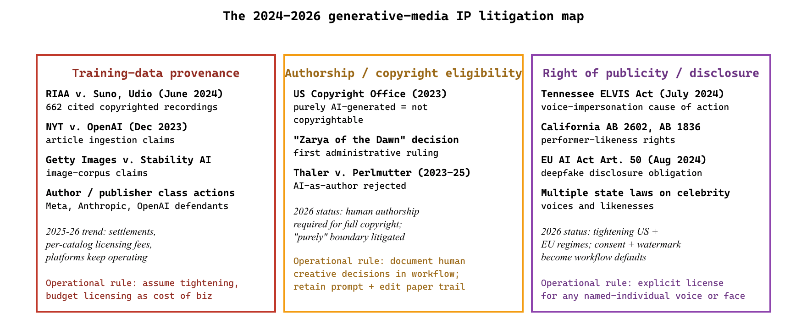

"Suno, Runway, ElevenLabs, Firefly. Each vendor has its own answer to the rights question, and that answer is half the contract."
Compass, IP-Litigation-Tracker AI Agent
The 2024-2026 creative industries story is not about which model produces the prettiest output; it is about which workflows, indemnification policies, and provenance protocols actually let creative work ship at production scale. Suno, Runway, ElevenLabs, Adobe Firefly, Midjourney, and Black Forest Labs FLUX each occupy a different point on the workflow-versus-rights frontier. The legal landscape (RIAA versus Suno, New York Times versus OpenAI, Getty Images versus Stability AI, the EU AI Act's transparency provisions) is unsettled but converging on a small set of operational disciplines: provenance via C2PA, brand-asset indemnification by the platform vendor, mandatory disclosure for generated voice and likeness, and human-in-the-loop review for any commercial output. This section walks the workflow patterns that have stabilized, with named-vendor cases for each.
Prerequisites
This section builds on the model surveys in Section 73.6 and the multimodal-generation foundations in Chapter 20. Familiarity with the safety and watermarking practices from Chapter 47 is required for any commercial creative workflow.
Suno and Udio: The Music-Generation Litigation Front
Suno crossed 100 million users in 18 months, faster than ChatGPT's first 18 months by absolute count, although Suno's per-user engagement was much lighter. The RIAA's June 2024 lawsuit against Suno and Udio cited 662 specific copyrighted recordings that the labels argued were in the training set; the discovery process subsequently became one of the largest training-data forensic exercises ever attempted in U.S. courts.
The music generators introduced in Section 73.6 (Suno and Udio) are also the sharpest rights-and-licensing test case in generative media, which is why they reappear here through a legal rather than a capability lens. Both were sued by the RIAA in 2024 over training-data provenance, with the major labels alleging that the models were trained on copyrighted recordings without license. The cases remain active through 2025 and 2026, with both platforms continuing to operate while the litigation proceeds. The 2025 settlement discussions in the broader generative-AI training-data space (some publisher and stock-image suits have reached license-based settlements) suggest a probable resolution path: per-track or per-catalog licensing fees flowing from generation platforms to rights holders, with the platforms continuing to operate under negotiated commercial terms.
For practitioners, four operational disciplines have stabilized regardless of how the litigation resolves:
- Never use generated music that resembles a named artist's voice or signature style in commercial output.
- Use the platforms' commercial-license tiers, which carry explicit indemnification language.
- Retain the prompt-and-output paper trail.
- Document the human creative decisions that shaped the final track.
Runway and Pika: Video Workflow Integration
Runway's Gen-4 and Gen-4.5 produce 10-second clips at 1080p with coherent motion and consistent characters; the 2025 release added a controllable camera-path feature and longer-clip generation under specific constraints. Pika focuses on character animation and lip-sync, dominating the social-media creator segment. The production pipeline that has stabilized at major ad agencies treats AI-generated video as one element in a layered timeline: storyboards generated with image AI, key frames produced in Midjourney or Firefly, motion interpolation done with Runway or a fine-tuned Stable Video Diffusion variant, and final compositing handled in After Effects, DaVinci Resolve, or Adobe Premiere Pro. Runway's 2025 partnership with major Hollywood studios for previz and concept work is the most-cited reference for the high-end pattern; Pika's integrations with TikTok and Instagram creator tools are the most-cited reference for the social-media pattern. Both platforms ship enterprise tiers with commercial-output indemnification, model-version pinning, and dedicated capacity, which is increasingly required by the procurement teams that approve their use in branded campaigns.
ElevenLabs: Voice AI Under Tightening Regulation
ElevenLabs is the dominant voice AI platform for narration, dubbing, and audio production by 2026. Its multilingual voice cloning is used by audiobook publishers, podcasters, and accessibility teams to produce high-quality narration at a fraction of human-studio cost. The platform has invested more than most in consent and watermarking, with a documented consent workflow for voice cloning and audio-watermark detection tooling. The regulatory landscape is tightening: the EU AI Act requires explicit labeling of AI-generated voice content, and several US states (Tennessee's ELVIS Act, California's AB 2602 and AB 1836) have passed similar laws covering performer-likeness rights. The 2024-2026 operational pattern for commercial voice AI: explicit consent contracts with the voice talent (even synthetic voices), output watermarking on every audio file, disclosure in the final delivery (a metadata tag and, for some jurisdictions, an in-content disclosure), and rights-management workflow that retains the consent paper trail alongside the audio assets.
A mid-sized audiobook publisher in 2025 publicly described its workflow for AI-narrated production. The author signs an addendum to the publishing contract authorizing AI narration, the publisher contracts a "voice license" with a real voice actor whose voice is the basis for the synthetic narrator, the synthesis runs through ElevenLabs' commercial tier with watermarking enabled, a human producer reviews every chapter for pronunciation and prosody (with edits flowing back as prompt adjustments rather than re-recordings), and the final audio file carries a metadata disclosure that it was AI-narrated. Production cost is roughly 70% lower than traditional studio recording; the voice actor receives a per-title royalty rather than a per-hour studio fee, which favors high-volume narration over single-title work; and listener acceptance, measured by completion rate and review sentiment, is comparable to human-narrated titles in the same catalog when the workflow includes the producer review step. The lesson: AI narration is a workflow change, not a technology drop-in, and the rights-management discipline is the gating constraint, not the audio quality.

Adobe Firefly and the Indemnification Move
Adobe was the first major incumbent to ship a fully integrated generative AI tool with explicit commercial-output indemnification. Firefly, in its various model versions through Image 3 and Image 4 (2024-2026), trains on Adobe Stock content with documented licensing. Adobe's indemnification language (Adobe will defend customers against IP claims arising from Firefly-generated output used in compliant ways) became the procurement-team checkbox that other vendors had to match. Microsoft (for Copilot image generation), Google (for Imagen on Vertex AI), Anthropic (for Claude's image-analysis output, not generation), and OpenAI (for DALL-E commercial-tier output) have all since adopted varieties of customer indemnification. The operational discipline is consistent across vendors: the indemnification applies only when customers use the commercial tier, follow the vendor's prompt and content guidelines, and retain the workflow documentation. Procurement teams now require this language by default for any creative-output vendor.
C2PA Provenance and the Watermarking Layer
The Coalition for Content Provenance and Authenticity (C2PA) specification, version 2.0 (2024), is the industry-standard content-credentials format for media. C2PA credentials are cryptographically signed metadata attached to image, video, and audio files that record the file's origin, the editing steps applied, the AI tools used, and the human authors involved. Adobe, Microsoft, Google, Sony, Canon, Nikon, OpenAI, Stability AI, and Meta all support C2PA in their 2024-2026 release lines. The practical pattern that has emerged: AI-generation tools attach a C2PA credential at creation time; editing software preserves and extends the credential through the editing workflow; publishing platforms verify credentials at upload and display the provenance to end users. The credential is not a watermark in the visual or audible sense; it is a metadata-layer attestation. Some platforms (notably Adobe Stock and Getty Images) require C2PA credentials for AI-generated submissions and reject files without them. The 2026 status: provenance metadata is now a default expectation for professional creative output, not an optional security feature.
The IP Litigation Map
Three groups of suits are active through 2026: training-data provenance (Suno, Udio, OpenAI, Stability AI, Meta, Anthropic as defendants; RIAA, NYT, Getty, several publisher groups, and authors as plaintiffs), authorship and copyright eligibility (the US Copyright Office has held that purely AI-generated work is not copyrightable, but the boundary on "purely" is litigated), and right of publicity for AI-generated likenesses and voices (Tennessee's ELVIS Act, California's AB 2602 and AB 1836, multiple state and federal suits over generated celebrity voices). The 2025-2026 trend is toward settlement and license rather than injunction, with several major publishers and stock libraries signing AI-training licenses with frontier-model vendors. For practitioners, the operational discipline is: assume that today's training-data legal status will tighten, build provenance and licensing assumptions into the workflow now, and budget for licensing fees as a probable cost of doing business.
Generated voices and likenesses that resemble named individuals carry meaningful legal risk in the US through 2026. Tennessee's ELVIS Act (effective July 2024) gives Tennessee residents an explicit cause of action against AI-generated voice impersonations; California's AB 2602 and AB 1836 give California performers similar rights. The EU AI Act's transparency provisions extend to deepfake-style content with disclosure obligations. Workflow discipline: never generate a voice or likeness that resembles a named individual without an explicit written license, and route any borderline case through legal review. The platforms (ElevenLabs, Suno, Runway, Pika) have policies prohibiting this kind of use, but the policy is not a defense; the workflow discipline at the creative-shop level is the actual control.
EU AI Act Creative Provisions
The EU AI Act (Regulation 2024/1689) entered force in August 2024 with a phased application schedule. The creative-output provisions are: explicit disclosure of AI-generated content (Article 50), labeling of deepfakes, and transparency about training-data sources for general-purpose AI models. For creative shops with EU-market exposure, the operational discipline is: a disclosure label or metadata field on every AI-generated asset destined for EU audiences, an internal record of training-data assumptions for any custom-fine-tuned model, and an EU-AI-Act compliance review for any high-impact creative campaign. The disclosure obligation does not prevent AI use; it requires transparency, which most reputable creative shops have moved toward voluntarily through 2024-2026.
Cross-References to the Rest of the Book
- Chapter 20 covers the multimodal-generation foundations (image, video, audio) at technical depth.
- Chapter 33 covers the image-editing-instruction patterns that underlie modern creative-tool integration.
- Chapter 47 covers the safety and watermarking practices, including the C2PA provenance discipline at platform level.
- Section 53.3 covers the LLM-risk-governance frame that wraps the per-vendor disciplines described here.
- Chapter 67 covers the broader LLM-in-legal-practice context, which intersects with the IP-litigation map above whenever creative output reaches the courtroom.
- The Suno and Udio RIAA suits redefine commercial music workflows: never use generated music resembling a named artist, use commercial-license tiers with explicit indemnification, retain prompt-and-output paper trails, and document the human creative decisions that shaped the final track.
- Runway and Pika anchor the layered video pipeline: storyboards in image AI, key frames in Midjourney or Firefly, motion in Runway or Stable Video Diffusion, compositing in After Effects or Premiere Pro, with enterprise-tier indemnification and model-version pinning required by procurement teams.
- ElevenLabs voice cloning operates under tightening regulation: Tennessee's ELVIS Act, California's AB 2602 and AB 1836, and EU AI Act labeling requirements force explicit consent contracts, output watermarking, and metadata disclosure on every commercial audio file.
- Adobe Firefly's indemnification language became the procurement checkbox: Microsoft, Google, Anthropic, and OpenAI commercial tiers followed, with indemnification valid only on commercial tier plus prompt-and-content guideline compliance plus workflow documentation.
- C2PA provenance is the default expectation for professional creative output: cryptographically signed metadata travels from generation through editing to publishing, and platforms like Adobe Stock and Getty Images reject AI-generated files that lack credentials.
- Right-of-publicity and EU AI Act disclosure are the operational frame: assume training-data legal status will tighten, build provenance and licensing assumptions into the workflow now, and budget for licensing fees as a probable cost of doing business.
What's Next?
In the next section, Section 73.8: Ranking, Retrieval, and Personalization, we build on the material covered here.